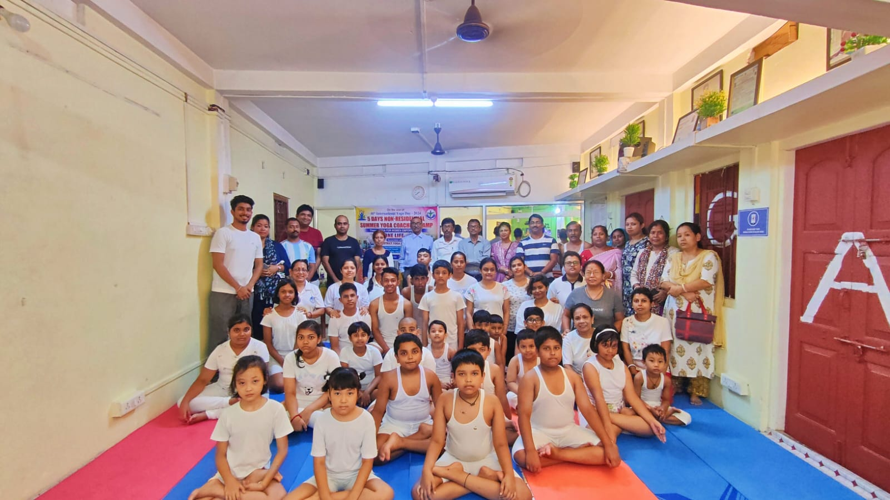
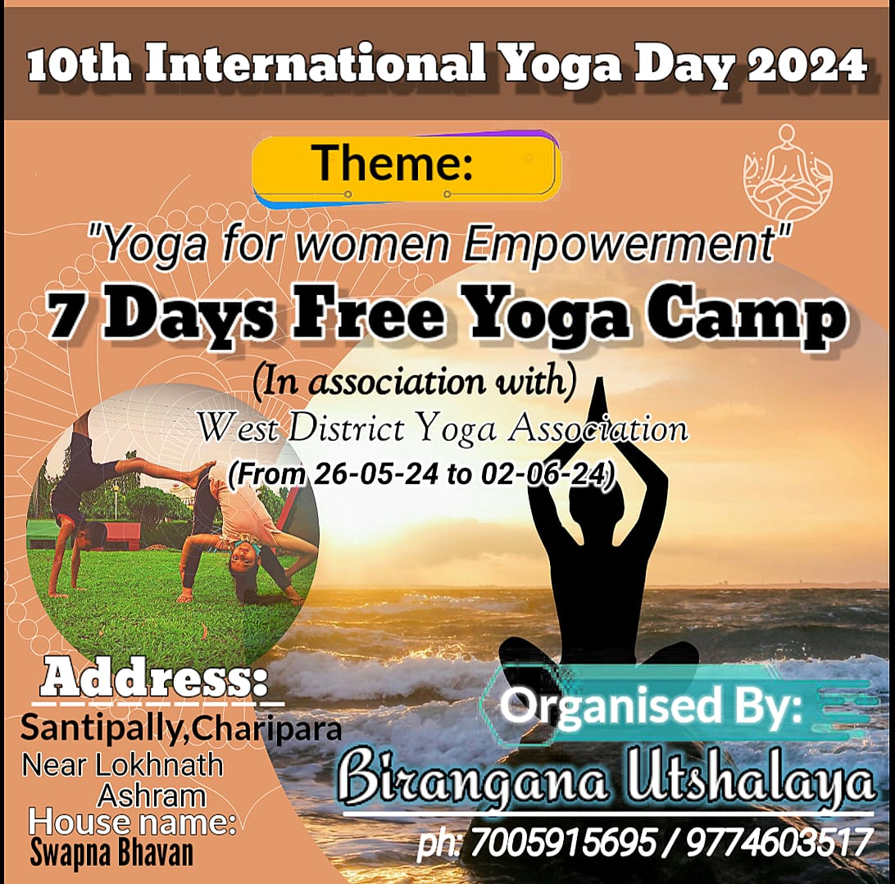
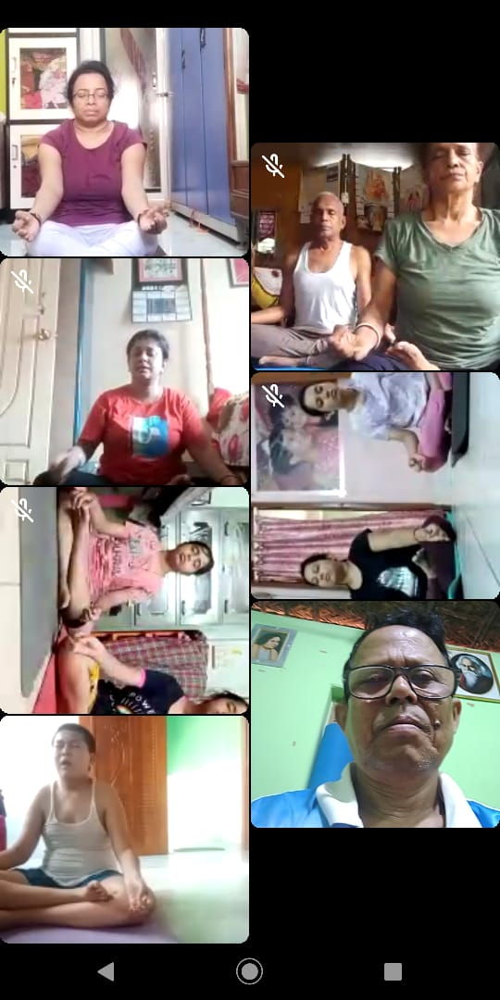
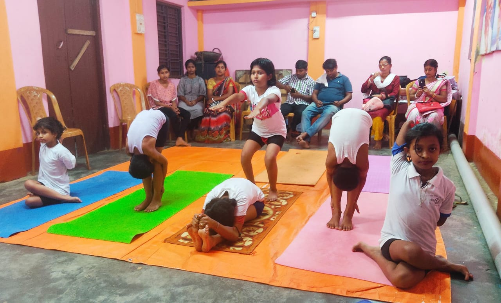
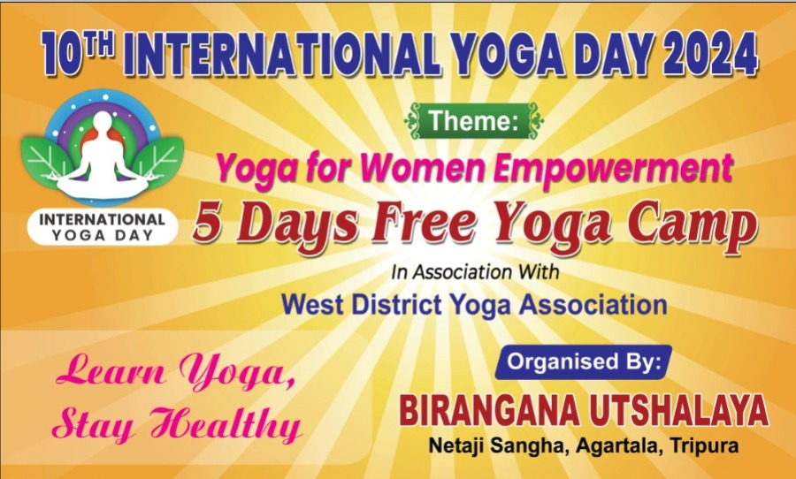

"yoga is the eternal and spiritual journey of the self through the self, to the self.yoga will help you grow as a person, it will teach you the real meaning of life.Do yoga and stay healthy to enrich the beautiful moments of your life without any illness...
Every year before international yoga day this camp is being organised by "BIRANGANA UTSHALAY",free for all and the best yoga coaching is also available here. For more information call or message on this numbers:- +91 9774603517/7005915695.
    